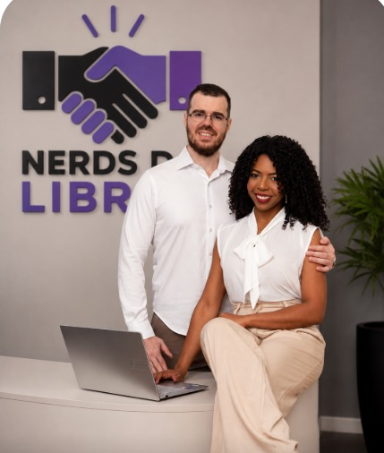

Conectamos você a intérpretes e tradutores de Libras profissionais para empresas, eventos, consultas, audiências e atendimentos. Acessibilidade de verdade, com qualidade e rapidez.

Escolha a modalidade ideal para a sua necessidade. Garantimos comunicação clara e acessibilidade para pessoas surdas em qualquer situação.
Interpretação ao vivo por videochamada, de onde você estiver no Brasil.
Profissional no local do seu evento ou atendimento, com toda a estrutura.
Sem burocracia. Você fala com a gente e cuidamos de todo o resto.
Conte o que você precisa: data, horário e se é remoto ou presencial.
Confirmamos a disponibilidade de um intérprete e enviamos a proposta.
O intérprete profissional realiza o serviço com qualidade e pontualidade.
Atendemos diferentes contextos que exigem comunicação com pessoas surdas.
Fale com a Nerds da Libras pelo WhatsApp. Atendemos remoto e presencial em todo o Brasil, com orçamento rápido e intérpretes profissionais.
Chamar no WhatsAppÉ simples: clique no botão de WhatsApp, conte o que você precisa (data, horário, tipo de atendimento e se é remoto ou presencial) e nossa equipe envia um orçamento e confirma a disponibilidade de um intérprete profissional.
Sim. Fazemos interpretação de Libras remota por videochamada (Zoom, Google Meet, Teams, WhatsApp e outras plataformas) para reuniões, lives, consultas e atendimentos em qualquer lugar do Brasil.
Sim. Disponibilizamos intérpretes de Libras presenciais para eventos, palestras, audiências, consultas médicas, reuniões corporativas e atendimentos. Consulte a disponibilidade para a sua cidade pelo WhatsApp.
Empresas, órgãos públicos, escolas, clínicas, hospitais, produtoras de eventos e pessoas físicas que precisam garantir acessibilidade e comunicação com pessoas surdas.